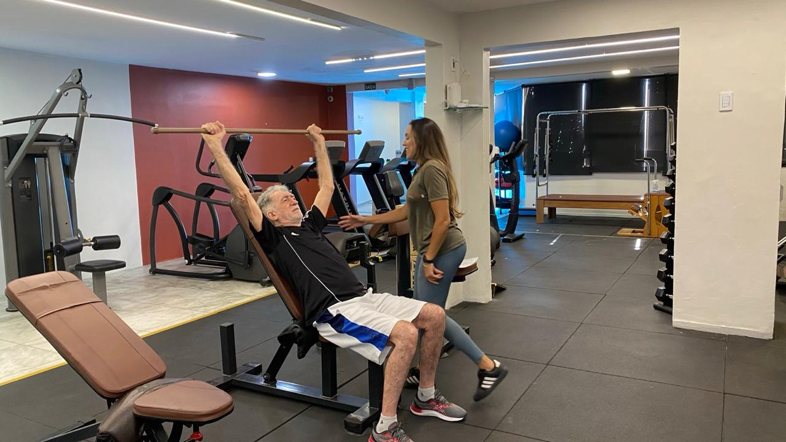
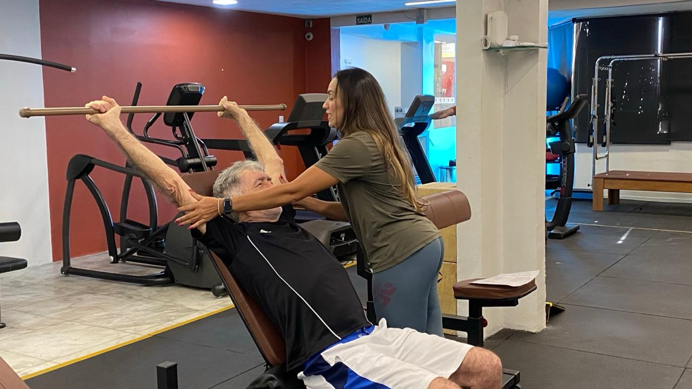
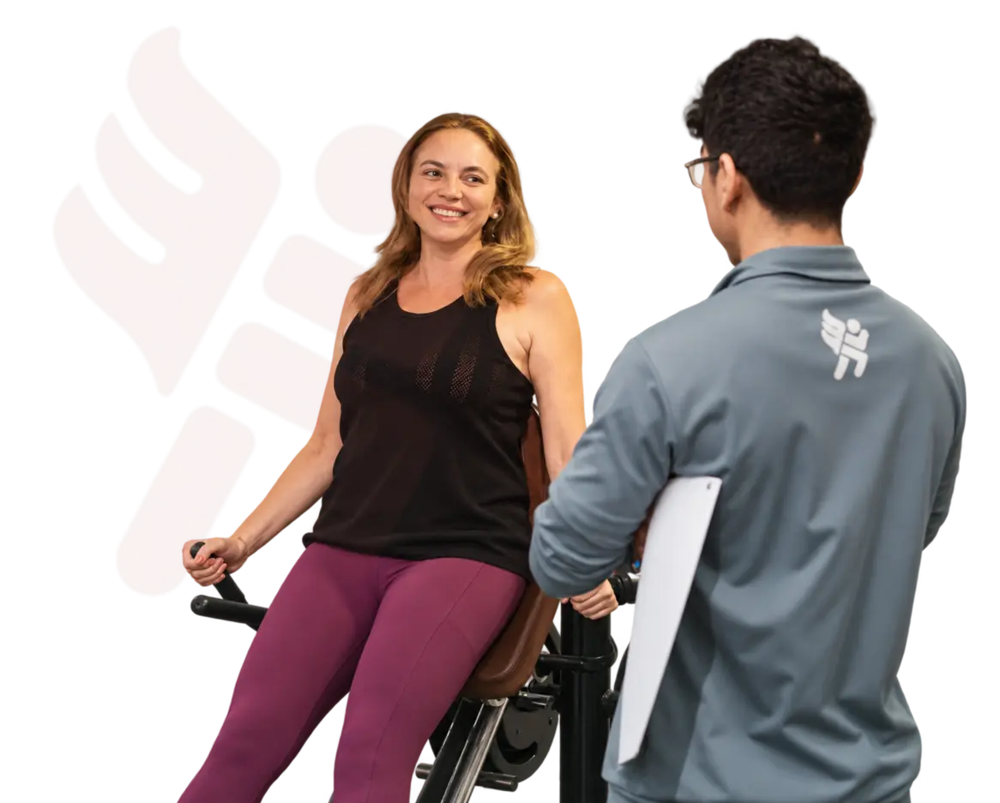
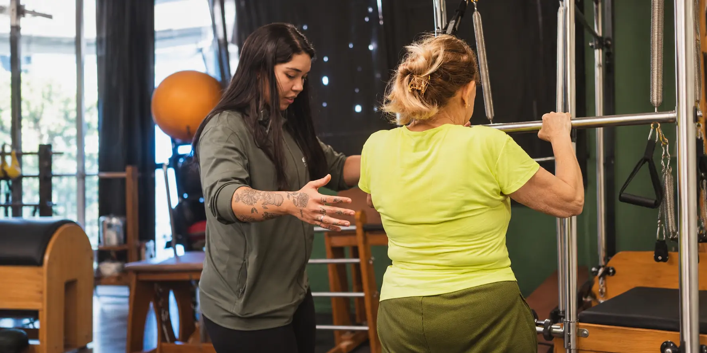
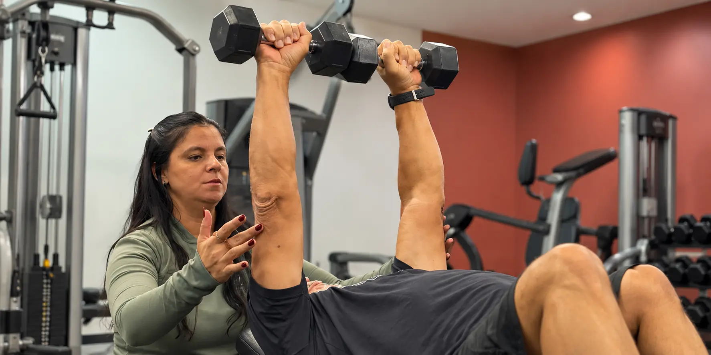
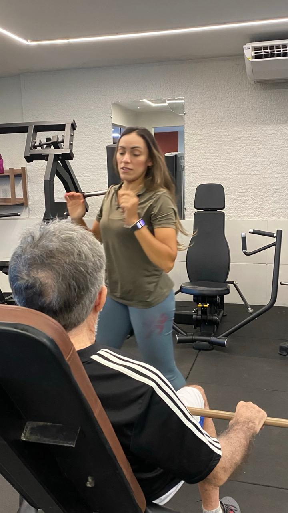
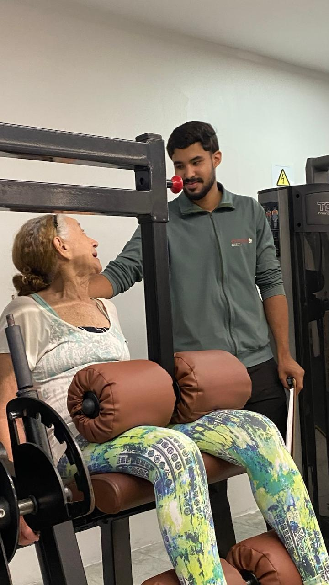

Viva seus melhores anos.
Com saúde e autonomia.
Treinamento personalizado e cuidado multidisciplinar
para uma vida com mais movimento.
Fortaleza Dionísio Torres
personalizado
multidisciplinar
periódicas
contínuo
Cuidado em movimento,
feito pessoa por pessoa.
Um método pensado para sua saúde física, clínica
e emocional, com acompanhamento em cada etapa.

Um cuidado em seis movimentos.
- 01Mapear
- 02Avaliar
- 03Personalizar
- 04Acompanhar
- 05Reavaliar
- 06Evoluir
Uma nova forma
de cuidar da sua saúde.
Educadores físicos, fisioterapeuta e nutricionista trabalhando juntos, com atenção ao seu corpo, à sua rotina e aos seus objetivos.


Foco em você.
Em cada movimento.
Um profissional presente, treino personalizado e respeito ao seu ritmo. Cuidado próximo para quem quer envelhecer com saúde e autonomia.
real
e limitações
individual

AVALIAÇÕES E CUIDADO CONTÍNUO
Evolução que se
acompanha de perto.
Avaliar, ajustar e seguir com você.
Cada etapa tem um propósito.
- Mapeamento de qualidade de vida
- Reavaliação do treino a cada 2 meses
- Avaliação de força a cada 4 meses
- Avaliações com fisioterapeuta e nutricionista
Um espaço para cuidar de você.
E se sentir parte.
Saúde, bem-estar e acolhimento em Dionísio Torres, Fortaleza.
Quero visitar a EverylifePessoas que cuidam
de pessoas.
Mais do que orientar exercícios,
estar presente na sua jornada.

Vamos tirar suas dúvidas?
Para quem é a Everylife?
Para quem busca saúde, autonomia e qualidade de vida por meio de treinamento personalizado e acompanhamento próximo. Converse com nossa equipe para conhecer a proposta e apresentar seus objetivos.
Como funciona o acompanhamento?
O cuidado inclui treinamento personalizado, avaliações periódicas e acompanhamento multidisciplinar, considerando suas necessidades e sua evolução.
Como agendar uma visita?
Fale com nossa equipe pelo Instagram @everylifeoficial para combinar sua visita e conhecer o studio.